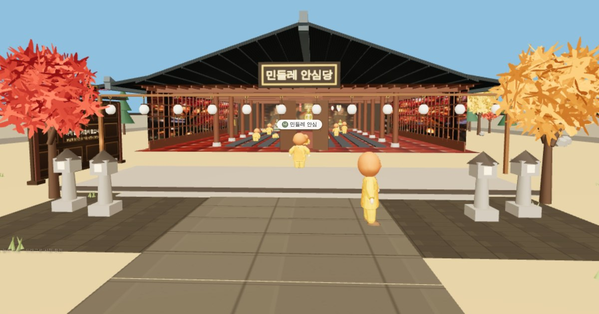

체험관 이용 안내
민들레 안심케어가 운영하는 온라인 사찰 체험 공간입니다. 브라우저에서 작은 스님 캐릭터를 움직이며 전각과 마당, 차실을 둘러볼 수 있습니다.

입장과 이동
체험관 홈에서 입장한 뒤 바닥을 클릭하거나 터치하면 캐릭터가 해당 위치로 이동합니다. 화면을 끌어 시점을 돌릴 수 있습니다. 3D 화면을 이용하려면 자바스크립트와 WebGL을 지원하는 브라우저가 필요합니다.
전각에서 할 수 있는 체험
- 합장과 예배 합장하면 캐릭터가 서서 두 손을 모아 고개를 숙입니다. 예배 동작은 방석에서 할 수 있습니다.
- 헌향 향 올리기를 누르면 캐릭터가 향로 앞에 가서 향을 올립니다.
- 목어와 108 염주 목어를 직접 두드리거나 자동 재생할 수 있습니다. 염주를 돌리면 한 알씩 횟수가 기록됩니다.
마당과 차실
마당에서는 전각과 석탑을 둘러볼 수 있습니다. 차실의 방석에 가까이 가서 앉기 버튼을 누르면 캐릭터가 앉아 차를 마십니다.